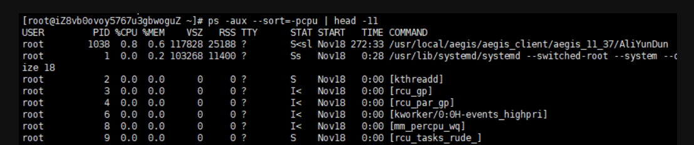
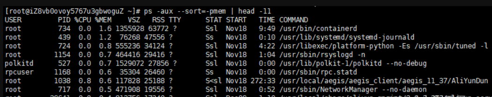
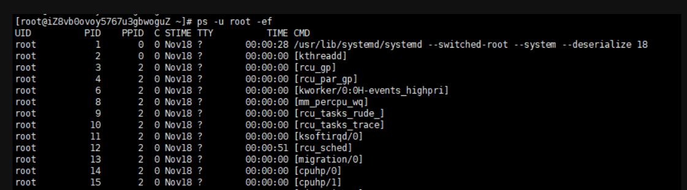
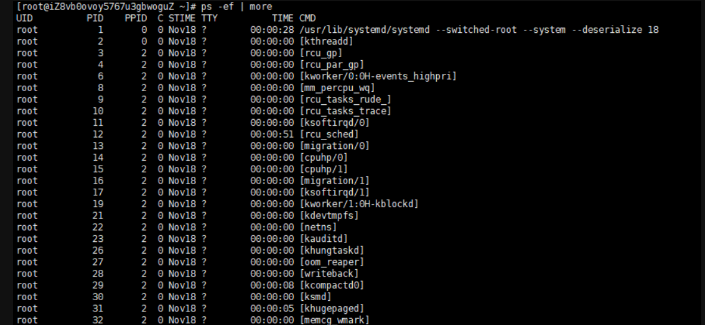

明明
刚才听到他们都在说什么什么ps，我给他们说ps我也会一点，p图嘛
然后他们都笑话我呜呜
白白
哈哈 他们说的那个是linux里的ps命令啊
白白
首先你得知道每个参数的含义：
-e 显示所有进程
-f 显示所有字段（UID，PPIP，C，STIME字段）
-a 显示一个终端的所有进程
-u 显示当前用户进程和内存使用情况
-x 显示没有控制终端的进程
–sort 按照列名排序
ps命令常用的方式有三种：
ps -ef：查看所有进程
ps -aux：查看所有进程
ps -ef | grep tomcat：查看指定进程(| 符号，是个管道符号，表示ps 和 grep 命令同时执行)
白白
UID：用户ID，即进程的拥有者
PID：进程ID
PPID：父进程ID
C：进程占用的CPU百分比
STIME：进程开始启动时间
TTY：登入者的终端机位置
TIME：进程使用的CPU（运算）时间
CMD：调用进程的命令
白白
USER：创建进程的用户
PID：进程ID
%CPU：进程占用CPU的百分比
%MEM：进程占用物理内存的百分比
VSZ：进程占用虚拟内存的大小（单位KB）
RSS：进程占用实际物理内存的大小（单位KB）
TTY：进程在哪个终端运行。
STAT：进程状态
START：进程开始启动的时间
TIME：进程使用的CPU（运算）时间
COMMAND：调用进程的命令
明明
ps -ef | grep tomcat 是搜索 tomcat 的进程，如果我没猜错的话。
白白
恭喜你答对啦 那可想而知，搜索 mysql 的进程：ps -ef | grep mysql
明明
那进程会占用内存的，我们如何查看进程对应的cpu以及内存呢？
白白
好问题！举个栗子--查看CPU/内存占用率最高的进程
查看进程的时候，让进程按照CPU使用率排序，然后展示前10行，就能清晰地看到哪些进程占用的资源比较多。
PS1：head -11 是因为标题也算一行
PS2：+、-号可以调整排序，-pcpu 表示降序，+pcpu 表示升序
ps -aux --sort=-pcpu | head -11

同理，把 -pcpu 换成 -pmem，就能查看内存使用最多的10个进程。
ps -aux --sort=-pmem | head -11

如果不限制行数，也可以使用 sort 按照指定的列排序
升序：ps -aux | sort -nk 4
降序：ps -aux | sort -nk 4 -r
想不想知道如何查看指定用户的进程，我数三个数，... 好！我们开讲
白白
查看某个用户开启了哪些进程，可以使用 -u 参数指定用户名，比如，查看root用户的进程有哪些：
ps -u root -ef

除了 grep 外，还可以配合 more 分页查看进程：ps -ef | more
